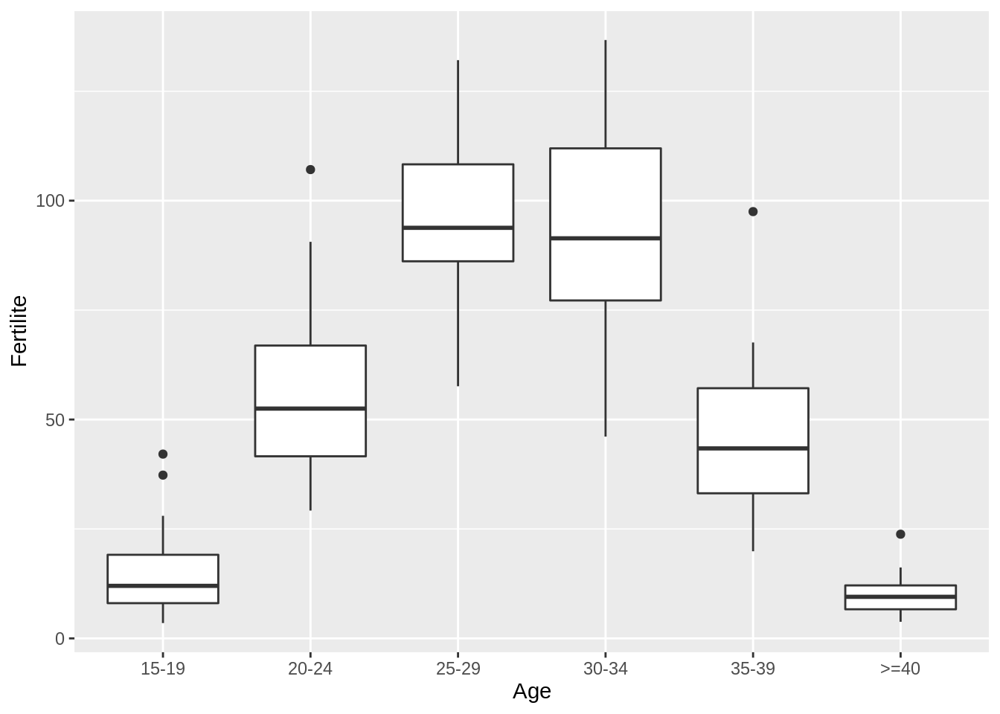
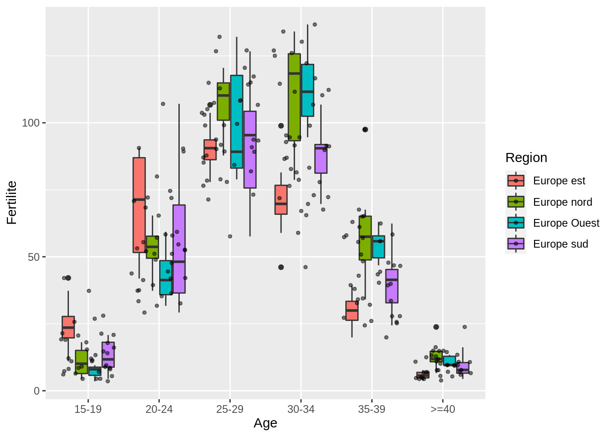
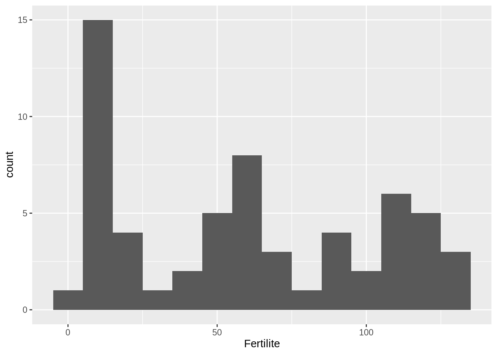
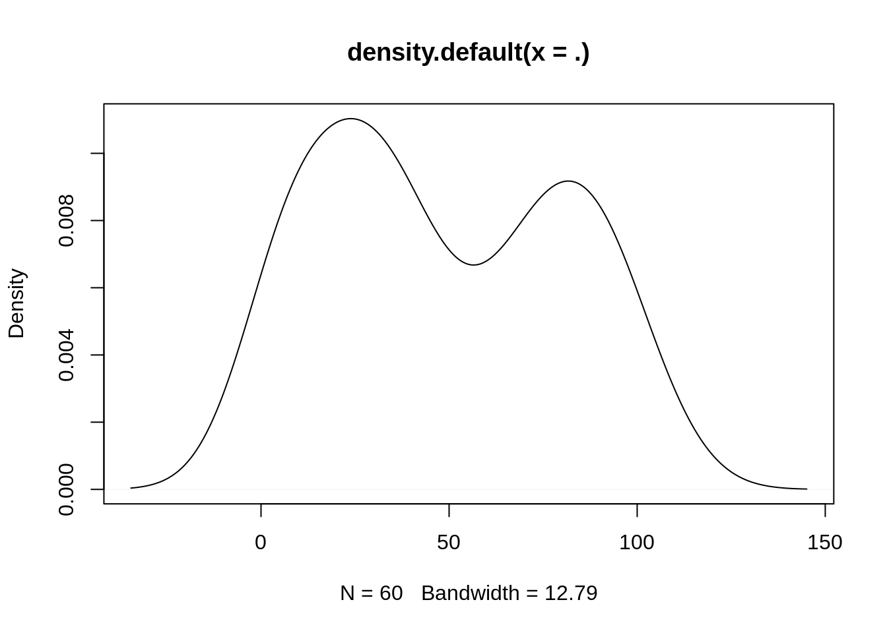
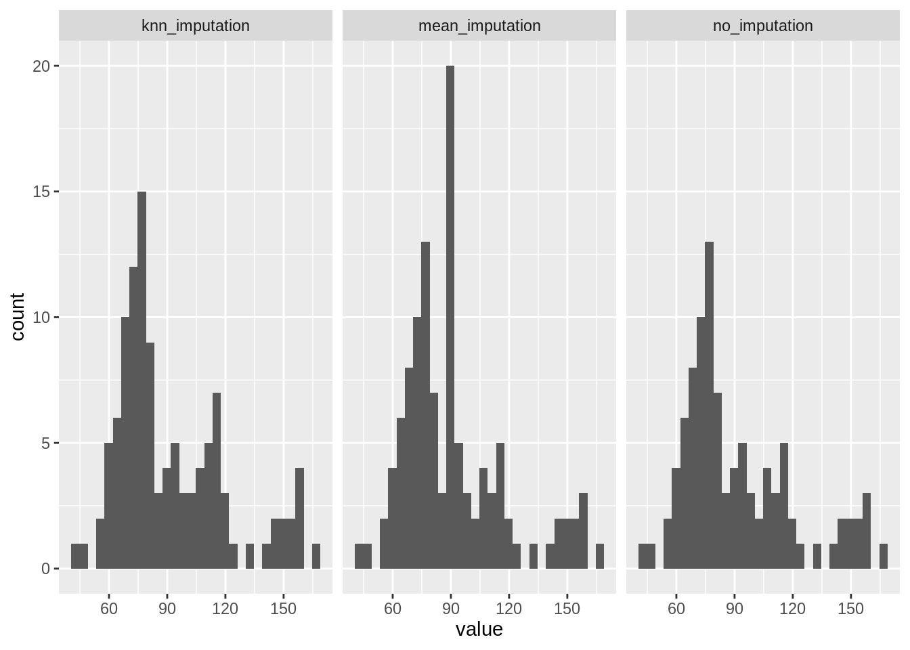

Homework #1: correction
Swirl, Rmarkdown reporting and first analyses
MAP573 team
09/29/2020
Preliminaries
Let us load a couple of packages useful in our analyses:
library(tidyverse)## ── Attaching packages ─────────────────────────────────────── tidyverse 1.3.0 ──## ✔ ggplot2 3.3.2 ✔ purrr 0.3.4
## ✔ tibble 3.0.3 ✔ dplyr 1.0.2
## ✔ tidyr 1.1.2 ✔ stringr 1.4.0
## ✔ readr 1.3.1 ✔ forcats 0.5.0## ── Conflicts ────────────────────────────────────────── tidyverse_conflicts() ──
## ✖ dplyr::filter() masks stats::filter()
## ✖ dplyr::lag() masks stats::lag()Part 1: Swirl
A bit long but essentially straightforward.
Part 2: Basic exploratory data analysis
The ‘fertility.csv’ data set contains the female fertility in Europe in 2012 for 39 European countries splitted by age groups 15-19, 20-24, 25-29, 30-34, 35-39, 40 and over. The fertility is given as the mean number of children born per 1000 women.
- Download and read the data set from the data directory of MAP573’s github repository (use, e.g.
read.csv). Store it into a data frame called fertility.
I suggest two solution, one in base R and another one using readr.
## base R
fertility <- read.csv("data/fertility.csv", row.names = 1, header = TRUE) %>% as_tibble()
## readr
fertility <- read_csv("data/fertility.csv") %>% select(-id)## Parsed with column specification:
## cols(
## id = col_double(),
## Pays = col_character(),
## Region = col_character(),
## Age = col_character(),
## Fertilite = col_double()
## )- Display the first 10 rows in the R markdown report.
The kable function is useful to format table-like printing The formating is adapted to the type of output (PDF, HTML, doc).
fertility %>% head() %>% knitr::kable()| Pays | Region | Age | Fertilite |
|---|---|---|---|
| Albanie | Europe sud | 15-19 | 20.8 |
| Albanie | Europe sud | 20-24 | 107.1 |
| Albanie | Europe sud | 25-29 | 126.7 |
| Albanie | Europe sud | 30-34 | 72.3 |
| Albanie | Europe sud | 35-39 | 24.4 |
| Albanie | Europe sud | >=40 | 5.5 |
- Make a summary of the data and display it (command
summary)
The tibble’s command glimpse allows us to have a quick overview of the structure of your table:
fertility %>% tibble::glimpse()## Rows: 234
## Columns: 4
## $ Pays <chr> "Albanie", "Albanie", "Albanie", "Albanie", "Albanie", "Alb…
## $ Region <chr> "Europe sud", "Europe sud", "Europe sud", "Europe sud", "Eu…
## $ Age <chr> "15-19", "20-24", "25-29", "30-34", "35-39", ">=40", "15-19…
## $ Fertilite <dbl> 20.8, 107.1, 126.7, 72.3, 24.4, 5.5, 8.0, 36.4, 78.9, 94.6,…The command summary - when applied on table like object - gives a summary statistics of each column, depending on its type (factor, numeric).
fertility %>% summary()## Pays Region Age Fertilite
## Length:234 Length:234 Length:234 Min. : 3.50
## Class :character Class :character Class :character 1st Qu.: 14.82
## Mode :character Mode :character Mode :character Median : 47.75
## Mean : 52.59
## 3rd Qu.: 84.97
## Max. :136.70- Find the country and age group with the highest, smallest value in each Region
Let us do this with a mix f tidyverse and base R tools:
fertility %>%
group_by(Region) %>%
summarise(
`fertility min ` = min(Fertilite),
`smallest (Country)` = Pays[which.min(Fertilite)],
`smallest (Age)` = Age[which.min(Fertilite)],
`fertility max ` = max(Fertilite),
`highest (Country)` = Pays[which.max(Fertilite)],
`highest (Age)` = Age[which.max(Fertilite)]) %>% knitr::kable()## `summarise()` ungrouping output (override with `.groups` argument)| Region | fertility min | smallest (Country) | smallest (Age) | fertility max | highest (Country) | highest (Age) |
|---|---|---|---|---|---|---|
| Europe est | 3.8 | Moldavie | >=40 | 106.7 | Bielorussie | 25-29 |
| Europe nord | 4.4 | Danemark | 15-19 | 134.1 | Suede | 30-34 |
| Europe Ouest | 3.5 | Suisse | 15-19 | 136.7 | Pays-Bas | 30-34 |
| Europe sud | 4.4 | Macedoine | >=40 | 126.7 | Albanie | 25-29 |
- Display boxplots of the fertility for each age group
I first relevel the levels in Age for presenting them in the more interpretable and natural order.
fertility %>%
mutate(Age = fct_relevel(Age, c("15-19", "20-24", "25-29", "30-34", "35-39", ">=40"))) %>%
ggplot() + aes(x = Age, y = Fertilite) + geom_boxplot()
Bonus: split by region.
fertility %>%
mutate(Age = fct_relevel(Age, c("15-19", "20-24", "25-29", "30-34", "35-39", ">=40"))) %>%
ggplot() + aes(x = Age, y = Fertilite, fill = Region) +
geom_boxplot() + geom_jitter(alpha = 0.5, size = 1)
- Display boxplots of the fertility for each ‘Region’ for the youngest age group
fertility %>%
filter(Age == "15-19") %>%
group_by(Region) %>% #
ggplot() + aes(x = Region, y = Fertilite) + geom_boxplot()
- Extract all the data rows with Country starting by “A”
filter(fertility, str_detect(Pays, "^A")) %>% knitr::kable()| Pays | Region | Age | Fertilite |
|---|---|---|---|
| Albanie | Europe sud | 15-19 | 20.8 |
| Albanie | Europe sud | 20-24 | 107.1 |
| Albanie | Europe sud | 25-29 | 126.7 |
| Albanie | Europe sud | 30-34 | 72.3 |
| Albanie | Europe sud | 35-39 | 24.4 |
| Albanie | Europe sud | >=40 | 5.5 |
| Allemagne | Europe Ouest | 15-19 | 8.0 |
| Allemagne | Europe Ouest | 20-24 | 36.4 |
| Allemagne | Europe Ouest | 25-29 | 78.9 |
| Allemagne | Europe Ouest | 30-34 | 94.6 |
| Allemagne | Europe Ouest | 35-39 | 50.9 |
| Allemagne | Europe Ouest | >=40 | 9.3 |
| Autriche | Europe Ouest | 15-19 | 8.6 |
| Autriche | Europe Ouest | 20-24 | 44.5 |
| Autriche | Europe Ouest | 25-29 | 89.2 |
| Autriche | Europe Ouest | 30-34 | 94.6 |
| Autriche | Europe Ouest | 35-39 | 46.8 |
| Autriche | Europe Ouest | >=40 | 9.6 |
- Extract the fertility values of the Region from North Europe and make a histogram
fertility %>%
filter(Region == 'Europe nord') %>%
ggplot() + aes(x = Fertilite) + geom_histogram(binwidth = 10)
- Extract the fertility values of the Region from East Europe and plot a kernel density estimate (function
density)
fertility %>%
filter(Region == 'Europe est') %>% pull(Fertilite) %>%
density() %>% plot()
- Include in your report the mathematical expression of the kernel density estimator as given at https://en.wikipedia.org/wiki/Kernel_density_estimation
Here it is:
\[ \widehat{f}_h(x) = \frac{1}{n}\sum_{i=1}^n K_h (x - x_i) = \frac{1}{nh} \sum_{i=1}^n K\Big(\frac{x-x_i}{h}\Big), \]
Part 3: Basic handling of missing values
The ‘ozoneNA.csv’ data set contains 112 observations about air pollution collected during the summer of 2001 in Rennes. The aim of this study is to analyze the relationship between the maximum daily ozone level (maxO3) and the other meteorological variables. Hence, the variables recorded in this data set are the following:
- maxO3 (maximum daily ozone)
- maxO3v (maximum daily ozone the previous day)
- T12 (temperature at midday)
- T9 (Temp at 9am)
- T15 (Temp at 3pm)
- Vx12 (projection of the wind speed vector on the east-west axis at midday)
- Vx9 and Vx15 (same at 9am and 3pm)
- Ne9, Ne12, Ne15 Nebulosity (cloud)
This data is incomplete - there are missing values. Indeed, it occurs frequently to have machines that fail one day, leading to some information not recorded. In this exercice, we will perform extremely basic imputation of missing values for the variable maxO3, measuring the maximum value of ozone of the day.
- Import the data as a data frame named
ozone.
ozone <- read_csv("data/ozoneNA.csv") %>% select(-X1)## Warning: Missing column names filled in: 'X1' [1]## Parsed with column specification:
## cols(
## X1 = col_double(),
## maxO3 = col_double(),
## T9 = col_double(),
## T12 = col_double(),
## T15 = col_double(),
## Ne9 = col_double(),
## Ne12 = col_double(),
## Ne15 = col_double(),
## Vx9 = col_double(),
## Vx12 = col_double(),
## Vx15 = col_double(),
## maxO3v = col_double(),
## WindDirection = col_character()
## )- Represent an histogram of the variable
maxO3.
ozone %>%
ggplot() + aes(x = maxO3) + geom_histogram()## `stat_bin()` using `bins = 30`. Pick better value with `binwidth`.## Warning: Removed 16 rows containing non-finite values (stat_bin).
- Perform a very basic imputation by replacing
NAvalues inmaxO3by the mean value. Create a vectormaxO3_NA_mean.
maxO3_NA_mean <- ozone$maxO3
maxO3_NA_mean[is.na(maxO3_NA_mean)] <- mean(maxO3_NA_mean, na.rm = TRUE)- We suggest now to perform imputation via the k-nearest neighbor approach (see https://en.wikipedia.org/wiki/K-nearest_neighbors_algorithm ). Use the package simputation to perform knn-imputation of the missing-value in
maxO3based on a distance computed with all remaming variable. To do so, use
simputation::impute_knn(ozone, maxO3 ~ .)where ozone is your data frame. The string maxO3 ~ . is a formula explaining that maxO3 is the variable on which imputation must be performed, and while ~ . says that all remaining variables of the data frame are used to perform the imputation. Create a vector maxO3_NA_knn with the vector with imputed values.
maxO3_NA_knn <- ozone %>% as.data.frame() %>%
simputation::impute_knn(maxO3 ~ .) %>% pull(maxO3)- Compare visually the distributions of the three vectors
maxO3,maxO3_NA_meanandmaxO3_NA_knn.
tibble(
no_imputation = ozone$maxO3,
mean_imputation = maxO3_NA_mean,
knn_imputation = maxO3_NA_knn
) %>%
pivot_longer(everything()) %>%
ggplot() + aes(x = value) + geom_histogram() + facet_grid(~ name)## `stat_bin()` using `bins = 30`. Pick better value with `binwidth`.## Warning: Removed 16 rows containing non-finite values (stat_bin).